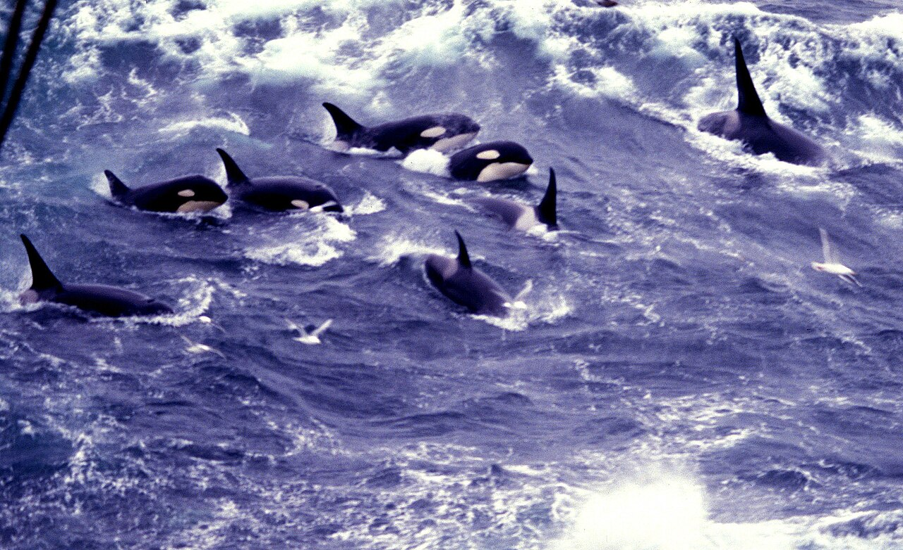

Turn your phone sideways
to read the slides.
Give it your topic and a few papers you trust. It returns a corpus checked against the scholarly databases, judged against criteria you approve, and documented paper by paper.
One real run, on culture and social learning in whales and dolphins.
Press → or click to go on · ← back · F full screen
Click to begin →

The topic, in the researcher's own words:
I'm looking for papers about culture, dialects, and social learning in whales and dolphins (cetaceans) that examine how non-human marine mammals acquire and transmit non-genetic behaviors, vocalizations, and foraging strategies across generations. I'm particularly interested in research that investigates horizontal and vertical social learning, distinct vocal dialects, regional hunting traditions, and multi-generational cultural clans. Studies of cultural evolution in cetaceans are very interesting. Papers that examine acoustic patterns, ecological impacts, and population genetics across entire ocean basins are relevant.
Later answers narrowed it: “Taxon: cetaceans specifically.” “Captive studies: out.” “multi-taxa: out”.
Five papers they knew belonged (PaperRaven asks for a half-dozen or so):
It reads the seeds, asks where the boundary falls using real example papers, and writes down the answers. Four of them:
A study of cetacean vocal dialects, song or vocal clans as socially learned or culturally transmitted traits is in scope.
A paper that describes cetacean vocal dialects or vocal clans is in scope even if it does not test how they are learned; the acoustic-study exclusion does not apply to it.
A study of captive cetaceans is out.
Cantor et al. 2023, “Foraging synchrony drives resilience in human-dolphin mutualism”, is in.
In all, 11 criteria and 7 judging notes: 14 of the 18 are the researcher's own, and 4 were written by the tool.
Round 23, as it happened: five proposals, each looked up in OpenAlex and Crossref.
A DOI is checked too. “Body size of large odontocetes” (2024) came with a DOI whose record is titled “A summary of intraspecific size variation for large odontocetes”. The titles do not agree, so it was refused.
Over the whole run: 197 proposed, 192 verified, 5 not verified. Nothing unverified entered the corpus.
The four verified papers from round 23, with the judge's own reasons:
Over the whole run: 133 in, 34 out, and 25 undecided, which the researcher ruled on. The judge is a model, so calls near the boundary could differ if judged again: every reason is kept.
4.0 a roundrounds 1–9: all from the LLM's own recall.
recall 4.0 → 2.9rounds 10–24: recall thins; web searches for recent work add a little (0.5 a round).
2.2 a roundrounds 25–30: the works the corpus cites, ranked. 13 papers, among them Janik 2014, now cited by 17.
4.4 a roundrounds 31–42: the works that cite the corpus, ranked. 53 papers, among them Garland & Rendell 2024, which cites 28.
README.md start here: the topic, the criteria, how the run wentpapers.bib, papers.csv 158 papers, each with why it is inexcluded.csv each exclusion, its criterion and reasonuncertain.csv the undecided, yours to rule onworklist.csv how to get each PDF, open access firstcitation_network.html, citations.csv who cites whomaudit/ everything behind it, for checkingThe run's network page: 158 papers and 1,254 citations among them. Shown: its main connected cloud, 156 papers. In the browser, hover for a paper, click to open it, drag to rearrange.
The same 158 papers by year of publication. The works citing the corpus reach the recent literature: 51 of their 53 papers are from 2016 or later.
| Asking ChatGPT | Google Scholar | PaperRaven | |
|---|---|---|---|
| Are the papers real? | Some may not exist, or have the wrong details | Yes | Every one matched to a database record |
| What it finds | Often the same few papers | What matches your keywords, ranked | New papers round after round, including ones that share none of your keywords |
| Your criteria | None | None | A separate judge applies criteria you approved, and gives its reason |
| Citations | None | “Cited by”, one paper at a time | Ranks the works your whole corpus cites, and the works that cite it, late in a run, with your OK |
| What you keep | A chat | A list of results | A bibliography, every decision with who made it, a citation network, the PDFs it can get, and an audit trail |
enforced by PaperRaven's code or by Claude Code · instructed a rule the LLM is told to follow
fetch, and never a look at your .env. instructedThen type /paperraven in Claude Code. · github.com/aaronclauset/paperraven
A. Clauset, “PaperRaven: a machine assistant for generating topic-bounded, verified samples of the scientific literature”, 2026.